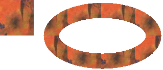

Instead of drawing a line or curve with a solid color, you can draw with a texture. To draw lines and curves with a texture, create a TextureBrush object, and pass the address of that TextureBrush object to a Pen constructor. The image associated with the texture brush is used to tile the plane (invisibly), and when the pen draws a line or curve, the stroke of the pen uncovers certain pixels of the tiled texture.
The following example creates an Image object from the file Texture1.jpg. That image is used to construct a TextureBrush object, and the TextureBrush object is used to construct a Pen object. The call to Graphics::DrawImage draws the image with its upper-left corner at (0, 0). The call to Graphics::DrawEllipse uses the Pen object to draw a textured ellipse.
Image image(L"Texture1.jpg");
TextureBrush tBrush(&image);
Pen texturedPen(&tBrush, 30);
graphics.DrawImage(&image, 0, 0, image.GetWidth(), image.GetHeight());
graphics.DrawEllipse(&texturedPen, 100, 20, 200, 100);
The following illustration shows the image and the textured ellipse.

Â
Â